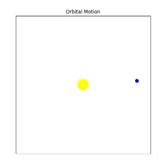

Problem 2
🚀 Cosmic Velocities: 1st, 2nd, and 3rd Cosmic Speeds
🔸 1st Cosmic Velocity
Definition:
The minimum velocity required for an object to orbit the Earth in a circular path without falling back to the surface.
Formula:
Parameters:
- \(v_1\): First cosmic velocity (m/s)
- \(G\): Gravitational constant ≈ \(6.674 \times 10^{-11} \, \text{Nm}^2/\text{kg}^2\)
- \(M\): Mass of Earth ≈ \(5.972 \times 10^{24} \, \text{kg}\)
- \(r\): Radius of the Earth ≈ \(6.371 \times 10^6 \, \text{m}\)
This is the speed at which the gravitational force and the required centripetal force for orbit are balanced. The object stays in orbit without falling.
Derivation of 1st Cosmic :
To derive \(v_1\), we equate the gravitational force to the centripetal force required for circular orbit:
- Gravitational force:
$$
F_g = \frac{G \cdot M \cdot m}{r^2}
$$
- Centripetal force:
$$
F_c = \frac{m \cdot v_1^2}{r}
$$
- Set \(F_g = F_c\):
$$
\frac{G \cdot M \cdot m}{r^2} = \frac{m \cdot v_1^2}{r}
$$
- Cancel \( m \) and multiply both sides by \( r \):
$$
\frac{G \cdot M}{r} = v_1^2
$$
- Take the square root:
$$
v_1 = \sqrt{\frac{G \cdot M}{r}}
$$
🔸 2nd Cosmic Velocity
Definition:
The minimum velocity required for an object to escape Earth's gravitational field and move into space.
Formula:
Parameters:
- \(v_2\): Second cosmic velocity (m/s)
- \(G, M, r\): Same as above
This is the escape velocity. If an object reaches this speed, it will leave Earth’s gravity permanently without needing further propulsion.
Derivation:
To derive \(v_2\), we use conservation of energy, where kinetic energy equals the gravitational potential energy:
- Kinetic energy: \(\(KE = \frac{1}{2} m \cdot v_2^2\)\)
- Potential energy: \(\(PE = -\frac{G \cdot M \cdot m}{r}\)\)
- Total energy at escape is zero: \( KE + PE = 0 \):
$$
\frac{1}{2} m \cdot v_2^2 - \frac{G \cdot M \cdot m}{r} = 0
$$
- Simplify and cancel \( m \):
$$
\frac{1}{2} v_2^2 = \frac{G \cdot M}{r}
$$
- Multiply by 2:
$$
v_2^2 = \frac{2 G \cdot M}{r}
$$
- Take the square root:
$$
v_2 = \sqrt{\frac{2 G \cdot M}{r}}
$$
🔸 3rd Cosmic Velocity
Definition:
The minimum velocity required for an object to escape not only Earth’s gravity but also the Sun’s gravitational pull, allowing it to leave the Solar System.
Formula:
Parameters:
- \(v_3\): Third cosmic velocity (m/s)
- \(G\): Gravitational constant
- \(M_s\): Mass of the Sun ≈ \(1.989 \times 10^{30} \, \text{kg}\)
- \(R\): Average distance from Earth to the Sun ≈ \(1.496 \times 10^{11} \, \text{m}\)
This is the speed needed to escape the Solar System and continue toward interstellar space, like the Voyager 1 mission.
⚖️ Comparison Table
| Cosmic Velocity | Formula | Purpose | Approx. Speed |
|---|---|---|---|
| 1st Velocity | \(\sqrt{ \frac{G M}{r} }\) | Enter orbit around Earth | ~7.9 km/s |
| 2nd Velocity | \(\sqrt{ \frac{2 G M}{r} }\) | Escape Earth’s gravity | ~11.2 km/s |
| 3rd Velocity | \(\sqrt{ \frac{2 G M_s}{R}}\) | Escape the Solar System | ~16.7 km/s |

🔻Factors Affecting Cosmic Speeds
| Cosmic Velocity | Influencing Factor | Effect |
|---|---|---|
| 1st Cosmic Velocity (v₁) | Distance from Surface (r) | As the distance increases, the velocity decreases because gravitational force weakens. |
| Earth's Mass (M) | As Earth's mass increases, the velocity increases because gravitational force becomes stronger. | |
| Gravitational Constant (G) | The value of G is constant, but it affects the gravitational force. | |
| 2nd Cosmic Velocity (v₂) | Distance from Surface (r) | As the distance increases, the velocity decreases because gravitational force weakens. |
| Earth's Mass (M) | As Earth's mass increases, the velocity increases because gravitational force becomes stronger. | |
| Gravitational Constant (G) | The value of G is constant, but it affects the escape velocity. | |
| 3rd Cosmic Velocity (v₃) | Distance (R - Earth-Sun) | As the distance from the Sun increases, the velocity decreases because gravitational force weakens. |
| Sun's Mass (Mₛ) | As the Sun's mass increases, the velocity increases because the Sun's gravitational force becomes stronger. | |
| Gravitational Constant (G) | The value of G is constant, but it affects the gravitational force. |
🚀 Why is it important for space exploration?
1st Cosmic Velocity
The 1st cosmic velocity (7.9 km/s) puts satellites into orbit; it provides communication and observation.
2nd Cosmic Velocity
The 2nd cosmic velocity (11.2 km/s) allows us to escape Earth and go to places like the Moon or Mars.3rd Cosmic Velocity
The 3rd cosmic velocity (16.7 km/s) makes it possible to leave the Solar System and reach the stars.
📌 Summary
Cosmic velocities are key to space exploration: the 1st (7.9 km/s) orbits Earth for satellites, the 2nd (11.2 km/s) escapes Earth for planetary missions, and the 3rd (16.7 km/s) breaks free of the Solar System for interstellar travel.